~8 Web Page Design~
3/11/2024
Changing the background colors of the page
Using span tag to take a div out of the order
This is how I would arrange things if I wanted ALL my divs to be apart of order
The Layout
This tutorial will show you the same web page that I used for my own site. There are many designs that you can use for flexbox, but I do happen to favor this one. It is very flexible. It contains the main section in the middle, at full size. It has a side bar section on each side. These side bars can be used for anything. Such as images, or hyperlinks to other sections of your site or even external sites.
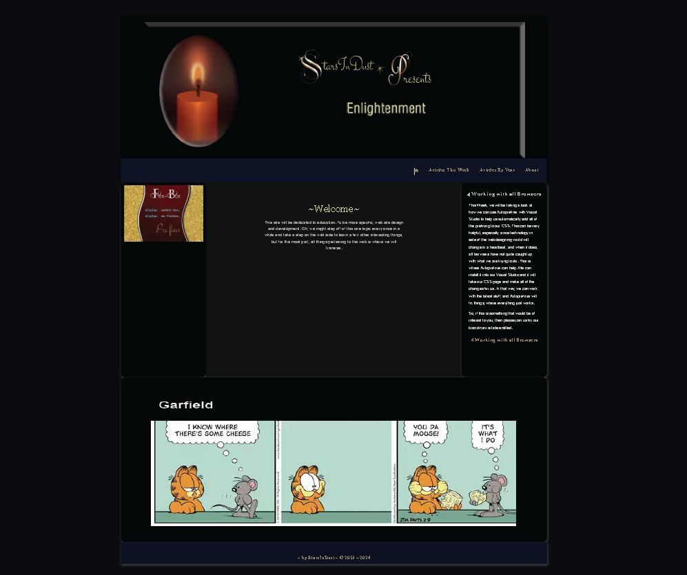
When the page is reduced in width, you will notice that the center, main section goes to the top of the page, and the two side bars swoop underneath of the main section to form a sort of pedestal for your main dialog. If you leave these two sidebars blank, it really tends to look like a sort of platform holding up the middle section.
The orange arrows are pointing out the side bars which moved to the bottom of the main section, at a tablet size width.
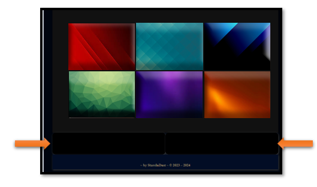
The Banner
The Banner will be placed in the header tag on the web page. This is probably one of the most interesting things in this design. That is because it tends to morph into something else with each screen width reduction. But, in reality, you are behind this magic. We will be using both media queries, as well as different sized banner sizes. Instead of hard-cording our images in the html, we will be making all of our switching in the CSS.
As you can see by the sizing, what actually works best for screen size may not actually fit perfectly in what the suggested Official specifications of the sizes may tell you.
The top size in the images below, are the official size, and what I actually used for these images are stated below that.
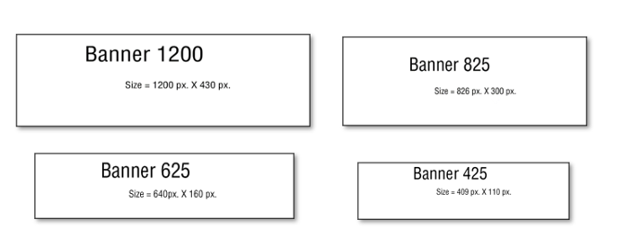
Look at the html for the header. This is where the banner is located, and yet as I stated before, it is not hard-coded in the html tag. That is because we are loading the banners from the CSS.
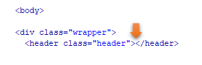
Now look at the CSS. We start by loading the 1200 size banner in the regular CSS code.
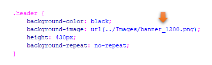
Now we do the rest of the magic in the media queries.
Watch it, you want to always make sure that your media queries come last in your style sheet. That is because if you start writing regular rules under the queries, you will find your CSS is simply not listening to you.
Watch it, if you are working with min-width in your media queries, you want to make sure that you start with your smallest screen size first. That is why we are starting with our screen size of 300. Of course, if you are using max-width, you will need to start with your largest size first. Order matters, when it comes to writing media queries.
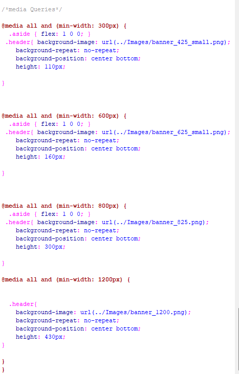
The Navigation
Ok, let’s take a look at the navigation next. Notice that our navigational links are sitting on the right side of the webpage. We are doing that by setting the justify- content to flex-end. We are also adding a bit of styling to both the anchor link and the hover.
As you can see, all of our flex stuff is going into the main rule of .navigation, itself.
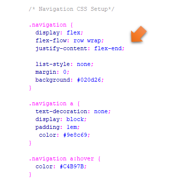
Changing the background colors of the page
We are dealing with 3 divs in the html to create the 3 sectional layout. We have the main section, and also the two asides. We had colored our asides background to the color black. But what is the name of our Main section. Well, that would be main.
Here we changed our main section from dark grey to teal.
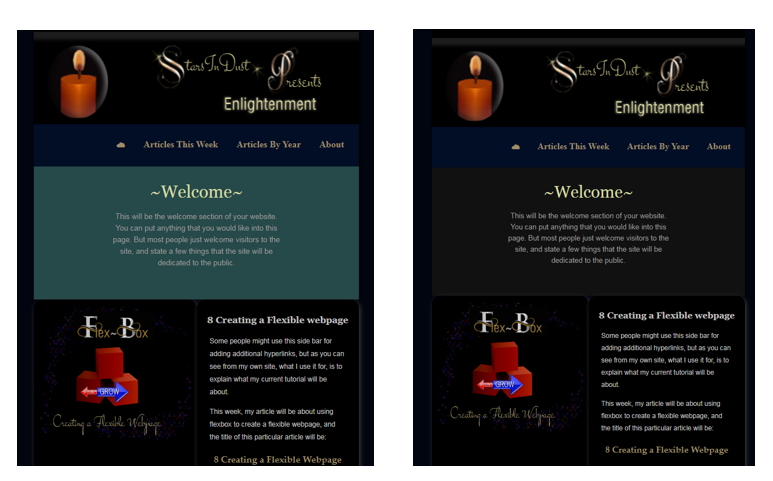
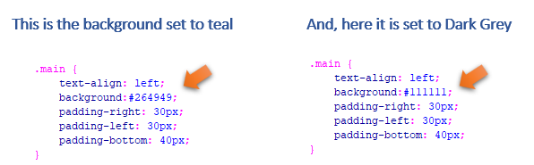
Ordering our Divs
If you take a look at how we ordered our divs in the html, you will find that the main is listed first, and the two asides come after it.
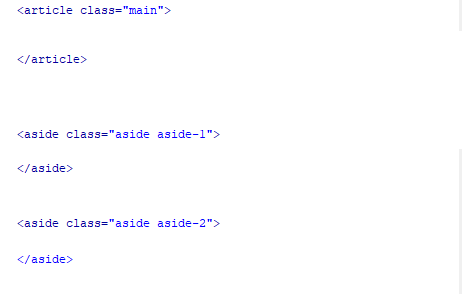
We are going to do the reordering of these divs in the CSS media queries. When we are on the largest screen size. We do not want our main div to be on top, but we want it sitting inside of the two asides on either side of it. So, we want our main div, at size 1200 screen size to be sitting at order number 2.
Look at our CSS for the 1200 size and you will see that move made here. The footer will be taking our 4th position on the bottom.
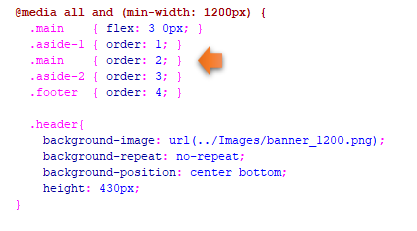
Using span tag to take a div out of the order
You will notice that I had taken the div with the cartoon out when it came to ordering the other sections. I did that by using a span tag on it.
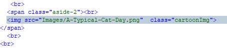
When I told this section to do its own thing, I could use the same rule as aside 2 and just take it out of the dizzying spin of the other 3 divs, by stating that it would be using a span. That says that I just want to be left alone, and sit where I specified in the html section.
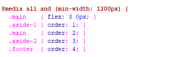
This is how I would arrange things if I wanted ALL my divs to be apart of order
Watch it, just remember if you do make this change, you will still need to put all media queries at the bottom of your CSS sheet. If you try to put this rule on your html page, it will not want to listen to you.
I changed my div to be called .aside-3, and then gave it these rules
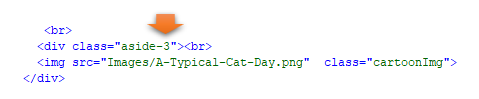
Watch it, remember that once you have taken your aside out of aside-2 and started to call it, aside-3, that it no longer has any rules attached to it. So, you will need to copy the rule for aside-2, and rewrite a new rule for aside-3
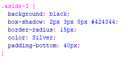
Then in your media queries you need to add this new aside-3 into this query using the order property
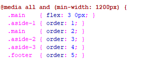
The Cartoon Div
Ok, weather you create an aside-3, or just use a span to create this div, which we are putting a Garfield cartoon into, you will find that when your image is squeezed into the cell phone size, that it will want to overflow, its container. In order to prevent that we are going to throw some new rules into our media queries for our 300 size. So, these are our new rules for that image.
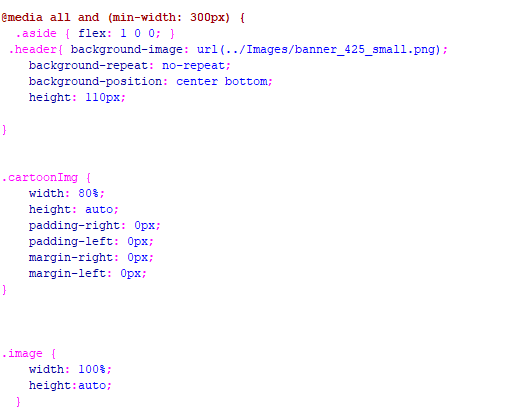
The rest of the CSS in either the media queries or the regular rules, is just placed there for additional styling of the elements on the page.
You can go HERE to see the code for this webpage.